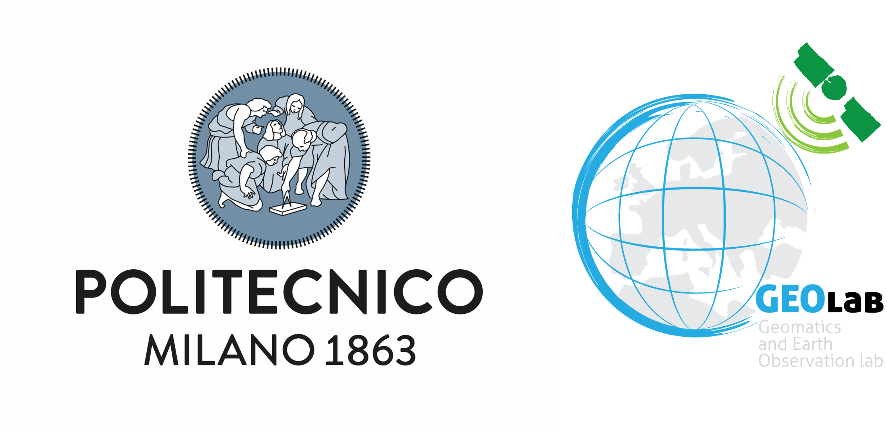

COPERNICUS4Schools
Contents:
- 1. Introduzione ai GIS (Sistemi Informativi Geografici )
- 2. GIS e strumenti di analisi
- 3. Ottenere dati da Copernicus EMS
- 4. Immagini Sentinel-2 pre e post evento
- 5. Ottenere dati dal Copernicus Land Monitoring Service (CLMS)
- 6. Ottenere i dati sulla popolazione del JRC
- 7. Calcolo delle classi di copertura di suolo colpite dall’alluvione
- 8. Calcolo della popolazione colpita dall’alluvione
Partners
{kind=link}
Disclaimer
The product was created in collaboration with ISPRA according to the collaboration agreement dated September 5, 2023, within the framework of an Agreement No. 241 (article 15) of August 7, 1990.
Disclaimer
Co-funded by the European Union’s Caroline Herschel Framework Partnership Agreement on Copernicus User Uptake under grant agreement No FPA 275/G/GRO/COPE/17/10042, project FPCUP (Framework Partnership Agreement on Copernicus User Uptake).
License Creative Commons — Attribution-NonCommercial-ShareAlike 3.0 Unported — CC-By-NC-SA